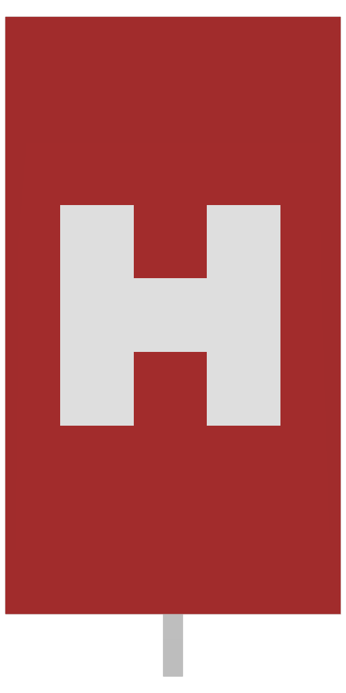
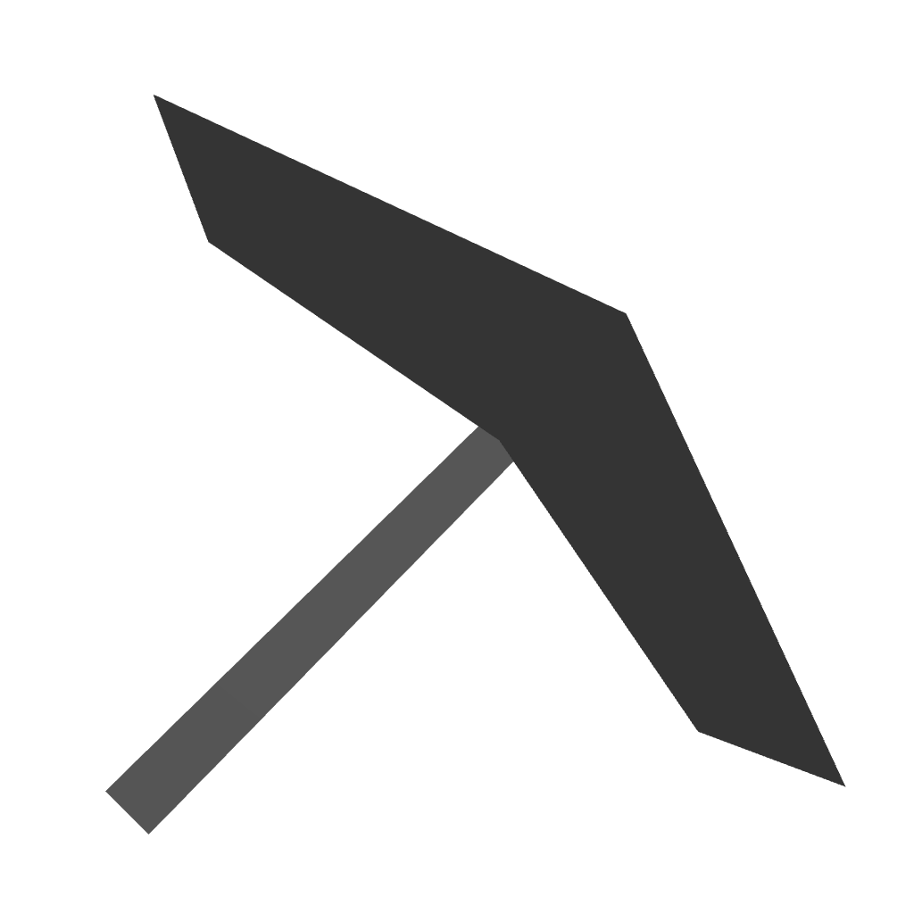
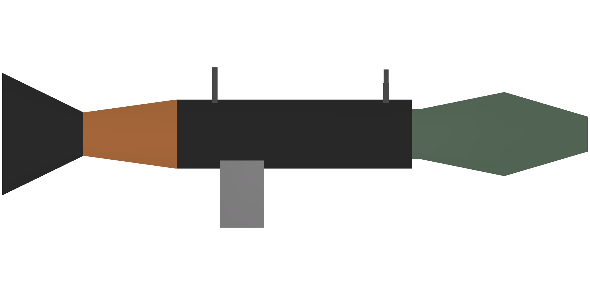
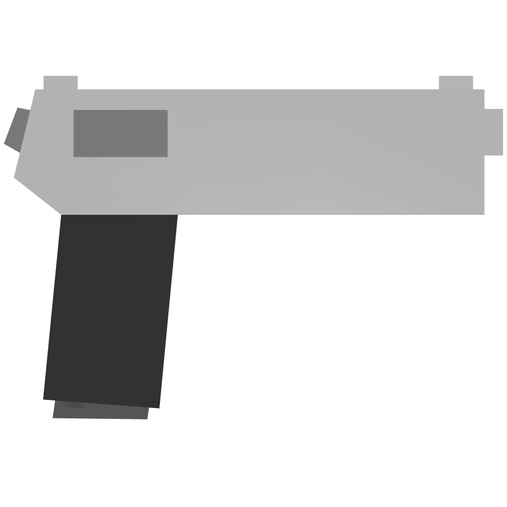

Concept — not wired up
What used to fill the gap before a round actually starts. A Valorant-style agent-select beat: both rosters laid out side by side over av.png, so viewers can read who is playing, what they picked, and what they are up against — instead of watching "Starting soon / Loading teams…" sit on screen with nothing to look at.
#notStarted's current bare splash on
overlay.html, for the selectKitsTime window between a match being found and the
first round actually starting.
Data it needs that the live snapshot doesn't send today: each player's chosen
kit and powerup while picks are still being made — /match/overlay already has
this in params.userData, it just isn't rendered here yet.

ferret Meta kit · Ammo
whisker
quorn Sniper kit · Boom
delta9 Meta kit · DoctorstartsAfter from the match JSON, already sent
today.